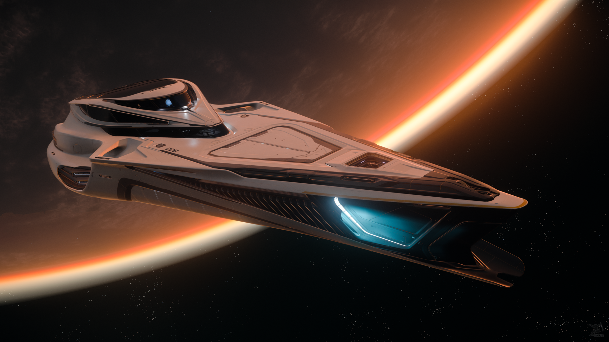

Up until the first half of the 29th century, Origin Jumpworks had been creating many smaller-crewed and single-seat vessels. They were well known for their accessible and luxury-oriented crafts, being very district from its rivals. In 2852, acting CEO Kain Yolsen announced that they would invest heavily into creating their own "flagship of the fleet", that would be known as the 890 Jump. Before this, high-end corporate spacecraft were a mix of many different modifications, conversions or custom designs. The initial cost, but also the maintenance and running costs would be so high, that these would only be available for a small potential audience. Yolsen explained that the 890 Jump would completely change this game. At the time of the announcement Origin had done little to no development work on the 890 Jump, and its financial analysts had no idea of the costs of designing and constructing a ship of this scope, but Yolsen was undeterred.
In developing the overall look of the ship, Origin avoided using ordinary spacecraft engineers and instead contracted industrial designer Hadrian Wells. Hadrian's biggest challenge was to design the ship with an eye to impress onlookers. Creating a hundred-plus meter capital ship designed around aesthetics was truly shocking, since all other ships of that era were extremely modular and utilitarian. After 18 months of development, Origin had a reasonable plan for the ship's overall design and construction. They quickly invested in broad simulations in order to allow the ship to make use of existing docking facilities and repair yards despite its different design aesthetic. A large problem in the development process was that for the first time in modern aerospace history, everybody could see right into their progress. Ship developers typically do not announce projects to the public until a contract had been signed or a prototype had flown. Because of this open development, the company received a lot of critical comments, immediately seeing a series of snags and issues with the prototype as Yolsen's "fifty billion credit disaster". As a result, Origin's stock fell drastically despite the success of their current production lines. Two years after the first announcement, Origin ceased issuing updates on the 890 Jump's progress, and there would be no word of it until the first ship was spaceworthy. Some of the press thought this silence meant the project was cancelled or to be converted in some other type of ship. Despite this, Origin's silence had its benefits as stock prices stabilized and the 890 Jump faded into memory. Production could therefore continue silently behind the scenes.
On March 2857, at a special event in Earth's orbit, Origin revealed the production prototype of the 890 Jump, and it was an immediate hit. Stock reached a new high and kept climbing well through the 890 Jump's release the next year. 2858 marked the official launch of the 890 Jump. Origin promoted the ship to an audience they feared were not ready to accept its radical design, and spent significant sums marketing the ship to attempt to associate it with luxury in its typical ways. Their post mortem would indicate this was unnecessary and so they quickly lowered their marketing budget. In fact, new owners were eager to spread the word and preorders quickly filled up for seven years' worth of production. Origin would manufacture many models, and continued improving the ship throughout the following century, producing nineteen different models.
A major change to the 890 Jump came in 2943. Origin added launch capabilities and revealed their custom-designed 85x snub craft. From that moment, the 85x would be a permanent inclusion with all orders of the 890 Jump. In 2944, Origin CEO Jennifer Friskers announced the latest iteration that included a swimming pool and other amenities.
The Origin 890 Jump is an interstellar super-yacht designed to immerse its passengers in opulent luxury as the ship cruises from system to system.[1] Some 890 Jumps are privately owned by extremely wealthy individuals, in which case they serve as the ultimate social hotspots for friends, family, and guests. Other 890s are commercial vessels that focus on the elite tourism industry.
The Origin 85X is included with the 890 Jump.
